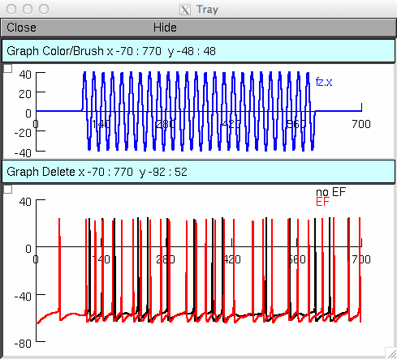

Effects of low frequency electric fields on synaptic integration in hippocampal CA1 pyramidal neurons: implications for power line emissions Cavarretta F, Carnevale NT, Tegolo D, Migliore M Frontiers in Cellular Neuroscience (2014) The model shows the effects induced by an electric field at power lines frequency. The simulation file "init.hoc" will run a typical simulation, with or without an electric field of 40V/m at 50Hz. -- Simulation -- After NEURON is installed and your browser configured auto-launch from ModelDB or Under Unix system: to compile the mod files use the command nrnivmodl and open the simulation file using the command nrngui init.hoc Under Window system: to compile the mod files use the "mknrndll" command. A double click on "init.hoc" will open the simulation window. Once the simulation is started: Click on the "Run sims" button to run the simulation. After a minute the figure you see being created should look like:  Question on how to use this model should be directed to francesco.cavarretta@unimi.it